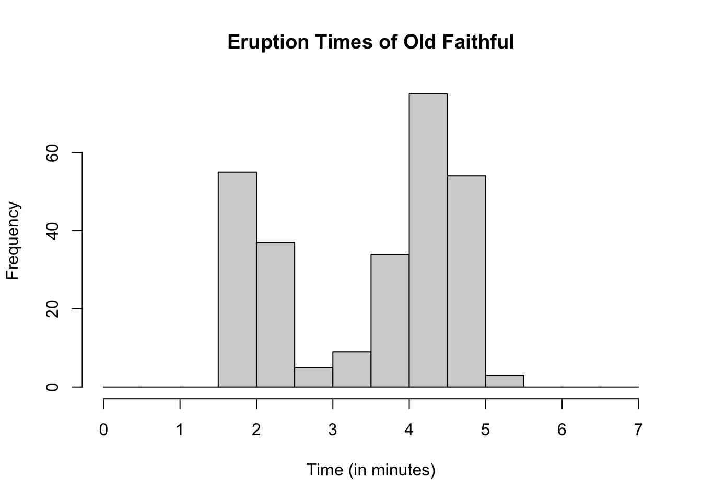

Chapter 13 Simulation
13.1 What Are Simulation Studies
Simulation studies are used in statistics to verify theoretical results, and to do “what-if” experiments. The are commonly used in a variety of applications and fields. Often times we have a particular theory or an idea about how things work. In order to verify that our theory is correct we can simulate a data set with known properties, and then check if the data set matches our theory. For example, suppose you want to calculate a 95% confidence interval for the heights of all college students. Our theory on confidence intervals says that we expect that a 95% confidence interval will capture the true mean about 95% of the time. If we simply go out and take a sample of data from “real-life” and then calculate the a confidence interval we have no idea if that confidence interval captures the truth because the true average height of all college students is unknown! It is not feasible to sample every college students, so we will never know if the true mean actually falls within our interval. Furthermore, in this example we only calculated one confidence interval. If we did know the true mean then our results would simply indicate that the confidence interval captured the mean or not, but nothing about the rate that confidence intervals capture the mean, which should be 95%. What we can do instead is simulate this process. We can randomly generate data that has a true mean of \(\mu\) using a computer. Then we can estimate a 95% confidence interval using the appropriate methods and see if this confidence interval contains \(\mu\). We then can repeat this process as many times as we would like because we are using a computer, which makes the process much simpler. If our theory about confidence intervals is correct we would expect that 95% of our confidence intervals captured the true mean (\(\mu\)), and the rest did not.
Simulations are very important, and can range greatly in complexity. We will focus on simple techniques in this section. For a more complete discussion on simulation studies in statistics, and best practices see Morris, White, and Crowther (2019). This article is freely avaliable online at https://onlinelibrary.wiley.com/doi/10.1002/sim.8086.
13.2 Review Random Variables
Before discussing how to simulate data with specific properties we review the concept of a random variable. This discussion is adapted primarily from Chapter 3 and 4 of Diez, Cetinkaya-Rundel, and Barr (2020). A random variable is a random process or variable with a numeric outcome. Random variables in general have a typical value which is called the expected value. However, in practice random variables also have variability, that is we do not expect to obtain the expected value for every random variable. Instead we expect to observe a range of values according to some sort of pattern, which is usually centered around the expected value.
For example, in Yellowstone National Park, Wyoming there is a famous geyser called Old Faithful. A geyser is a natural hot spring that periodically erupts water. The amount of time (in minutes) the eruption lasts varies each time, but not by a dramatic amount. The eruption time in minutes is the random variable, and the expected value is the average eruption length, and we can measure the variability using a measure of dispersion, like the variance. Below is a histogram of a random sample of eruptions times of 272 different eruptions.
hist(faithful$eruptions,
main = "Eruption Times of Old Faithful",
xlab = "Time (in minutes)",
breaks = seq(0, 7, by = .5))
As mentioned previously, random variables generate observations according to some sort of pattern. These patterns are referred to as densities, and can be analyzed visually, and analytically (i.e. through formulas). One of the most common ways to look at how often we would expect certain values for data that we find from the “real-world” is to use a histogram. Histogram order observations into mutually exclusive bins, where the height of each bin indicates how common a particular range of values is. For example, in the histogram above each bin is a 30 second (0.5 minute) range, and we can see the frequency of observations within the data set that are in this range on the y-axis. When thinking about random variables though, it is often more helpful to look at the proportion of observed values within a bin, instead of the frequency. We can modify our histogram to accomplish this.
hist(faithful$eruptions,
main = "Eruption Times of Old Faithful",
xlab = "Time (in minutes)",
breaks = seq(0, 7, by = .5),
freq = FALSE)
Notice that the y-axis now says “Density”. This is the relative probability that an observed data point will be a particular value. In “real-world” data, we can only estimate the density. We will never know the truth. Hence, we will never know the true expected value, or the true variance. This is why we have statistics!! We have statistics in order to make educated guesses about these values and properties from which the data arises from.
Analyzing the density or pattern of a random variable visually with histograms is intuitive, but limiting. Using a formula as a representation for a density is much more versatile and useful. For these functions we have parameters which are values that let us further customize the function representation of a density to the specific random variable that we have. Let \(X\) be a random variable, and \(x\) be some observed value. In practice, if \(X\) is a random variable that can only take on values that are discrete (usually integers) then we say the probability of observing some a particular value, say \(x\), is denoted \(p(x)\). There are extremely well known discrete densities that random variables tend to follow and that are available in R. A few of them are listed below.
- Binomial:
\[p(x) = \binom{n}{x} p^x (1-p)^{n-x} \hspace{1cm} x = 0, ..., n\]
Poison: \[p(x) = λ^x exp(-λ)/x! \hspace{1cm} x = 0, ..., n\]
Negative Binomial:
\[Γ(x+n)/(Γ(n) x!) p^n (1-p)^x \hspace{1cm} x = 0, ..., \]
If \(X\) is a random variable that can be any value within a range of numbers then we denote the density function of this random variable by \(f(x)\). As with discrete random variables, there are extremely well known continuous densities that random variables tend to follow and that are available in R. A few of them are listed below.
- Uniform:
\[f(x) = 1/(max-min)\]
- Log-Normal:
\[f(x) = 1/(√(2 π) σ x) e^{-((log{(x)} - μ)^2 / (2 σ^2))} \hspace{1cm} 0 <x < \infty\]
- Exponential:
\[f(x) = λ {e}^{- λ x} \hspace{1cm} 0 <x < \infty\]
Normal: \[f(x) = 1/(√(2 π) σ) e^{-((x - μ)^2/(2 σ^2))} \hspace{1cm} -\infty <x < \infty\]
t-Distribution
\[f(x) = Γ((n+1)/2) / (√(n π) Γ(n/2)) (1 + x^2/n)^-((n+1)/2)\hspace{1cm} -\infty <x < \infty\]
To see a complete list of well known distribution functions (or densities) that R already has see the help file ?Distributions.
13.3 Generating Random Variables
Each distribution available in base R is listed in ?Distributions. Each of the distributions has a link to their corresponding help file which lists four main functions: dxxx(), pxxx(), qxxx() and rxxx(). These are the density function, cumulative distribution function, quantile function, and a random number generator for the particular random variable of interest. The letters xxx are replaced by an code for the particular random variable. The density function (dxxx()) generates the relative probability of observing a particular value. The cumulative distribution function (pxxx()) generates the probability of observing a particular value, and anything smaller than this value. The quantile function (qxxx()) generates what value corresponds to a given percentile. Lastly, the random number generator (rxxx()) will generate a random variable according to the given distribuiton/density. We will focus only on dxxx() and rxxx().
For example, go to ?Distributions and click on dnorm which corresponds to the normal distribution (in the bottom third of the list). Here you will see the functions dnorm(), pnorm(), qnorm(), and rnorm(). To generate a normal random variable with mean 0 and standard deviation 1 we can use the following command.
## [1] -0.1049144## [1] -1.392449727 1.018245804 0.826401081 1.289595050 -0.643231482
## [6] -0.001173311 -1.948468606 0.680949495 0.274233523 -1.905682922
## [11] -1.207395634 0.379645715 -0.832700980 -1.480467865 1.045205002
## [16] 1.203374466 1.143497941 -0.798450844 0.713542224 0.014509402However, as we saw in the previous section, these common distribution functions have parameters which let us further customize the behavior of the random variable. We can change the parameters of any of the distributions in R using the function arguments.
## [1] 10.53266## [1] 9.918810 9.633491 10.141749 9.903283 10.774333 10.138772 9.615449
## [8] 10.785818 10.650341 10.024944 9.791361 10.094124 10.505912 10.409901
## [15] 10.263248 9.263302 9.656979 9.812624 10.574604 10.154701To find the relative probability of observing a particular value for a normal distribution we use dnorm().
# Relative probability of observing the value 0.25
# for a normal random variable with mean 0 and standard devation 1
dnorm(0.25)## [1] 0.3866681# Relative probability of observing the value 0.25, -0.5, 2
# for a normal random variable with mean 0 and standard devation 1
dnorm(c(0.25, -0.5, 2))## [1] 0.38666812 0.35206533 0.0539909713.4 Setting a Seed
Often times when running a simulation we will want to use the same numbers over and over again. The function rxxx() generates values randomly though, which means each time we call this function we will get new and different values. In order to make sure our values are consistent each time we run R, or across computers we can set the seed. The seed determines the way the computer generates our random numbers. Normally the seed is random, so each time rxxx() is called we get a new random sequence. Using the set.seed() function will make sure that the sequence stays the same each time we run rxxx().
See the example below were generate a sequence of 10 uniform random variables that are between -5 and 5. If you copy this code directly into your computer you will get the same sequence. However, if you do not set the seed you will get a different sequence.
## [1] -2.3449134 -1.2787610 0.7285336 4.0820779 -2.9831807 3.9838968
## [7] 4.4467527 1.6079779 1.2911404 -4.382137313.5 sample()
The sample() function is a powerful tool that can let you create your own unique random sequence. You can sample values with replacement, or without replacement. You can also assign certain probabilities to certain events. This is a particularly helpful function for rearranging rows, and for generating a sequence of categorical variables. For example, we can simulate a coin flip.
## [1] "Tails"Below is the code for simulating 10 coin flips.
## [1] "Tails" "Heads" "Tails" "Heads" "Tails" "Heads" "Heads" "Tails" "Heads"
## [10] "Heads"13.6 replicate()
The replicate() function repeats a function call n times in a very efficient way. Suppose we wish to find the probability we get exactly 3 heads if we flip a coin 10 times. We can replicate flipping a coin 10 times, and count how many of these times we see exactly 3 heads.
coin_flip_heads3 = function(){
coin_flip = sample(c("Heads", "Tails"), size=10 ,
prob = c(0.5, 0.5), replace = TRUE)
num_heads = length(which(coin_flip == "Heads"))
if(num_heads == 3){
heads3 = TRUE
} else{
heads3 = FALSE
}
return(heads3)
}
# Generates flipping a coin 3 times
# Returns TRUE if exactly 3 flips resulted in heads
# Returns FALSE if otherwise
coin_flip_heads3()## [1] FALSE# Replicate the experiment 10,000 times
see_heads3 = replicate(10000, coin_flip_heads3())
# How many of these experiments results in 3 heads???
# Probability of seeing exactly 3 heads is approximately 12%
table(see_heads3)/10000## see_heads3
## FALSE TRUE
## 0.8857 0.114313.7 Adding curves to graphs
Often times when generating data or using a real-world data set we might want to see how well a well known distribution fits a particular data set. We can do so by adding the proposed density function on to a histogram which contains the data set of interest. For example, suppose we wish to see if a normal distribution with mean of 3.5 and standard deviation of 1.14 fits the old faithful data set for eruption times. We can add this density function on top and see if it approximately fits the data.
hist(faithful$eruptions,
main = "Eruption Times of Old Faithful",
xlab = "Time (in minutes)",
breaks = seq(0, 7, by = .5),
freq = FALSE)
curve(dnorm(x, 3.5, 1.14), add = TRUE)Now lets generate 272 normal random variables with mean 3.5 and standard deviation of 1.14 and see how well are generated data matches the density function.
gen_data = rnorm(272, mean = 3.5, sd = 1.14)
hist(gen_data,
main = "Simulated Data",
xlab = "X",
breaks = seq(-0.5, 7, by = .5),
freq = FALSE)
curve(dnorm(x, 3.5, 1.14), add = TRUE)We do not see a perfect fit, but this is what happens with random samples. The fit for the simulated data is what we expect approximately if we had a sample with this distribution. It should be approximately the same as the curve, which we see for the simulated data. Our old faithful data is significantly less fitted the simulated data. Thus it appears that the old faithful eruption times is probably not normally distributed with mean 3.5 and standard deviation 1.14. How similar is “similar enough” is not a hard and fast rule, and it is ultimately up to the researcher. The simulated data set gives us a general idea of what is “similar enough”.
Note that the curve() function does not need to be added to graph but can stand alone.

In addition, we can make our own functions to plot using curve().

13.8 Example: Central Limit Theorem (CLT)
13.8.1 Recall CLT
Let \(X_1, ..., X_n\) be independent and identically distributed random variables with mean and variance, \(\mu\) and \(\sigma^2\). If the sample size is sufficiently large (\(n \geq 30\)), the sample mean \(\bar{x}\) will tend to follow a normal distribution with mean \(\mu\) and standard deviation \(\frac{\sigma}{\sqrt{n}}\).
In other words, for any set of data \(X_1, ..., X_n\) that is independent and comes from the same distribution, and that distribution has a finite mean and variance, \(\mu\) and \(\sigma^2\). Then
\[\bar{x} \sim N \left ( \mu, \frac{\sigma}{\sqrt{n}} \right ) \]
The distribution above is a sampling distribution. It is the distribution of a sample mean. That is, if we take \(k\) samples, and for each sample we calculated the mean, the central limit theorem tells us about the distribution of these means (\(\bar{x}_1, \dots, \bar{x}_k\)).
13.8.2 Assumption Violations of CLT
The central limit theorem has a few key assumptions. Some of these assumptions are fairly easy to meet, and others are more susceptible to being violated. For example, typically it is reasonable to assume that mean and variance are finite. Other assumptions are easier to violate, and the consequences of violating these assumptions vary greatly. Sometimes we may have data that comes from a mix of multiple distributions, violating the assumption that data is identically distributed. Another assumption violation could be independence. For example, in time series data we typically observe a random variable over a sequence of time and measure it repeatedly. This would violate the independence assumption because earlier observations are typically related to future observations. Another assumption that is often violated is the minimum sample size. The central limit theorem says we need at least 30 observations, or else we should use the t-distribution instead. Historically this is usually not a very big problem. The requirement that our sample size is at least 30 is a “rule of thumb” and not based on rigorous statistical theory.
13.8.3 The Data
We will see how well the CLT theorem applies to a data set that has a uniform distribution. That is, say we have a sample of 50 observations which we believe are all uniformly distributed between -5 and 5. We want to determine if the mean of a sample of this type would be normally distributed according to the CLT. To do so, we simulate a sample of this type 10,000 times and assess if it matches the CLT results.
# Simulate a sample of 50 observations that are uniformly distributed
gen_unif_mean = function(the_min, the_max){
gen_data = runif(50, the_min, the_max)
the_mean = mean(gen_data)
return(the_mean)
}
# Simulate 10000 samples, each of size 50, where the minumum value is -5
# And the maximum value is 5
set.seed(123)
sim_means = replicate(10000, gen_unif_mean(the_min = -5, the_max=5))
# histogram of results
hist(sim_means, freq = FALSE)
To add a curve to the graph we need to know the mean and the standard deviation of the data we generated. For a uniform distribution with a minimum of -5 and a maximum of 5, the mean is 0 and the standard deviation is \(10/\sqrt{12} \approx 2.89\). Thus according to CLT, we expect our histogram above to correspond to a normal density with mean 0 and standard deviation \(2.89/\sqrt{50} \approx 0.41\).
References
Diez, David, Mine Cetinkaya-Rundel, and Christopher D Barr. 2020. OpenIntro Statistics, Fourth Edition. OpenIntro. https://www.openintro.org/book/os/.
Morris, Tim P, Ian R White, and Michael J Crowther. 2019. “Using Simulation Studies to Evaluate Statistical Methods.” Statistics in Medicine 38 (11): 2074–2102.